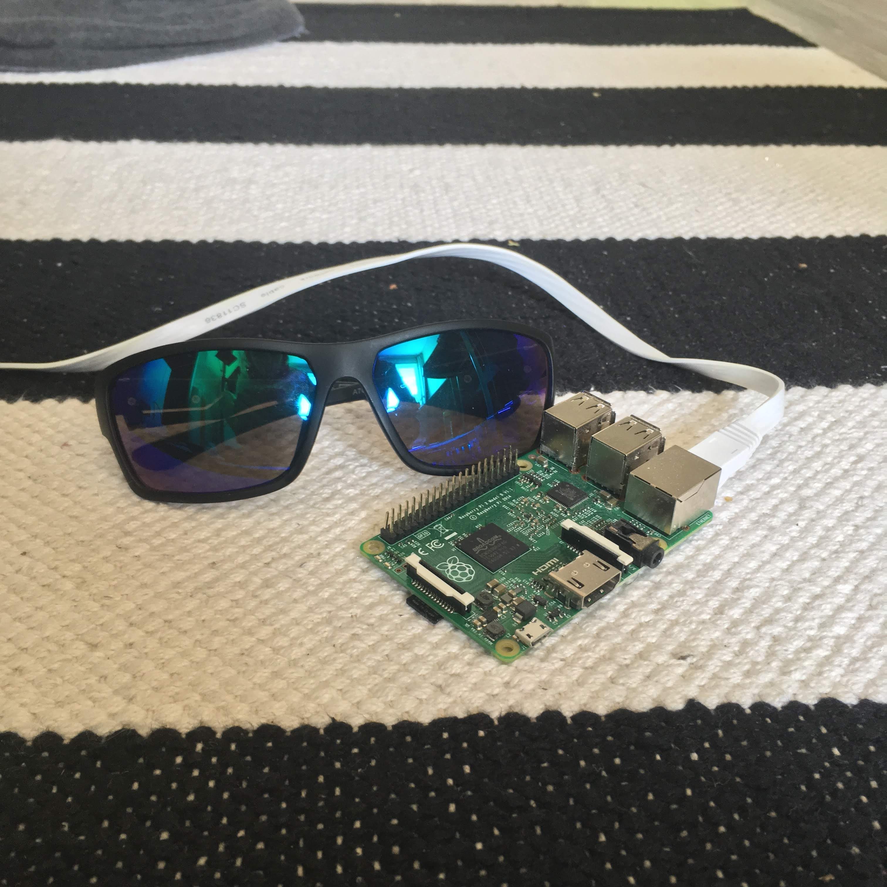

tyhjä...
Käytän mielelläni myös muita palveluita (Whatsapp, Telegram, tms.) tarpeen tullen
Alkuperäinen idea oli siis kattoo tarviiks kukaan 2019 "IT-tukea". Idea lähti läheisen kanssa käydystä keskustelusta, jossa itse uskoin jokaisella mummolla ja papalla olevan edes joku nuorempi läheinen, joka osais tehdä kaikki IT-hommat (korjaa printterin, auttaa kännyjutuissa, selvitellä elektronisten palveuiden toimintaa). Toinen kanta oli se, ettei jokaisella välttämättä ole tällaista henkilöä. Projektin tarkoitus on testata Lippajärven alueelta ihmisten tarvetta IT-tuelle. Projekti loppuu abouttirallaa elokuussa, kun palaan tietojenkäsittelytieteiden opintojen pariin. Perusohjelmointi/SQL/Konekieli -juttuja saa siis kysellä samaan aikaan :D "Palvelut" ovat siis maksuttomia, mikäli joku ei nyt välttämättä halua tyrkyttää rahaa / korvapuusteja poloisen työmiehen nassuun. Tärkeimpien tekstien fontit myös väännetty vähän enemmän tappiin vanhempaa sukupolvea varten.
ainii ja tietäjille tää kaikki pyörii apache2 -servul raspilla feat. mun html + css + js -taidot on tasoa peruna, joten lopputulos on tää nettisivun laatu :-DD Ohessa kuva serveristä skaalana aurinkolasit
Sivuston pikakuvake on myös Seppo Taalasmaa koska mä voin